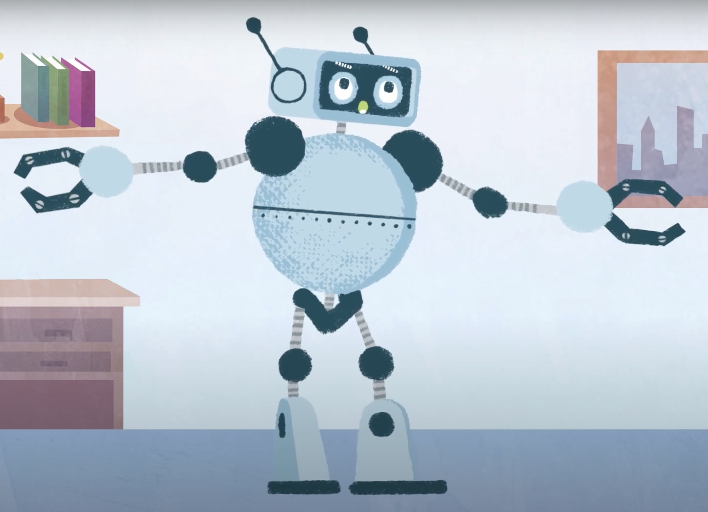

Phase 2/3: Expository Documentaries and Animation Effects
Photo Essay
This project was my first time working with Adobe Premiere Pro. While I was not a pro with the software at the time (and still am not), I enjoyed learning the new tools I could incorporate to edit my own videos together.
B-Roll Challenge
This was my second time working with Adobe Premiere Pro. Our assignment was to compile B-Roll film, so I decided to add a mixture of B-Roll from my real life and B-Roll from videos about retro video games to create a narrative of going back in time to my childhood and playing these games again.
The Interview
This was one of my favorite projects to work on so far. I needed to interview somebody who had knowledge about old sports video games, and there was no better person for this task than my dad. I enjoyed the pre-interview work of getting the lighting right, making sure the audio worked, and setting up the scenery. I then of course loved talking to my dad about the games he grew up playing. Finally, I edited the product in Premiere Pro to give it a sleek, professional finish.
Premiere Pro Special Effects
This assignment was fun because I got to experiment with some of many effects in Premiere Pro that I was not able to explore before. The YouTube tutorials helped guide me in the right direction to give my text the glitching effect that I wanted, since my final project will cover retro video games.
Adobe After Effect Animation
While this assignment was similar to the one before, the learning curve was wildly different. This was my first time working with after effects, so I needed to follow online tutorials closely in order to give my text the effect of turning at the beginning and then switching colors.
Adobe Character Creator

At first I was hesitant to start this assignment since I have no prior experience with character animation. However, after using Adobe Character Animator, it could not have been more helpful and straightforward. The fact that my computer was able to easily scan my face and give the robot facial expressions was astonishing to me. Then, after the recording, I was able to implement body movements to the robot that matched with what I was talking about.
Phase 2/3 Course Goals
1. Foster the creative habits of mind
Just like in phase 1 of this portfolio, I learned a great deal about the various Adobe softwares we used through experimenting and playing. Both in-class and YouTube tutorials gave me the foundation I needed to complete video projects that I was proud of. While I am no expert with the Adobe softwares, I feel that these projects gave me enough knowledge to tackle more projects like these in the future, and add even more into them!
2. Engage with others in a workshop environment
While I did not do a ton of "working" with my peers during these assignments, we did do a great deal of talking about our final projects. During this time, I learned a great deal about my other classmates through their thinking process. While talking with them, it even sparked some new ideas in my mind for various things I could incorporate in my final project. Working with my dad during the interview was a treat since I enjoy talking with him about his childhood and what he enjoyed doing. Even though it was my dad, I was still nervous to conduct an interview in front of bright lights and a microphone, but, in the end, we both enjoyed the process.
3. Think deeply about craft
Working with film has taught me a ton about the actual craft of film making. My favorite film to make was probably the B-Roll challenge, since I got to experiment with different mediums of video while trying to tell a story. I used video from my everyday life, timelapses of car rides I took, YouTube videos of retro video games, and some home video that is probably around 17 years old at this point. I know that I could not make every project "perfect," but I did my best to emulate perfection by making sure my audio was matched correctly, scene transitions were used properly, lighting was ample (when needed), and animations were experimented with.
4. Engage in sustained research and skills development.
Working with Premiere Pro was a learning curve to say the least, but using it consistently has allowed me to gain the skills necessary to work comfortably within the software. Also, working with synergetic softwares to Premiere Pro like Adobe Audition, Character Creator, Lightroom Classic, and After Effects allows me to create more complex works that I wouldn't have been able to a month and a half ago. Since Photoshop was the only Adobe software I was familiar with prior to this class, I am happy to say that I have added many more Adobe skills to that arsenal.
5. Learn to present your work
I have been using YouTube since I can remember, but I have never uploaded a YouTube video before these units. As a mostly introverted individual, this was uncomfortable at first until I realized that we're all just amateur college students creating for the first time together. Now, though, I am comfortable releasing videos to the world, and not just the class (as long as my face isn't in it). I have learned that making is a process, but a fun process that should be shared with others where applicable.

generated by Pitt Fuego
“Why make a spark when you can light a fire?